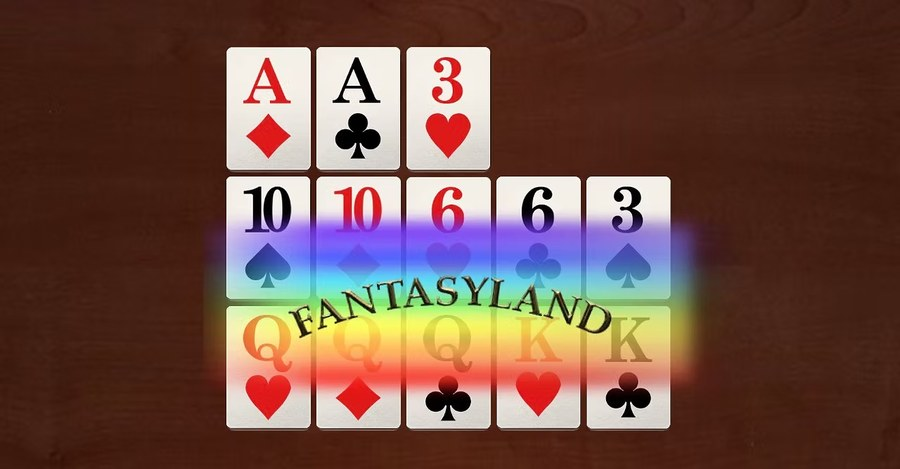
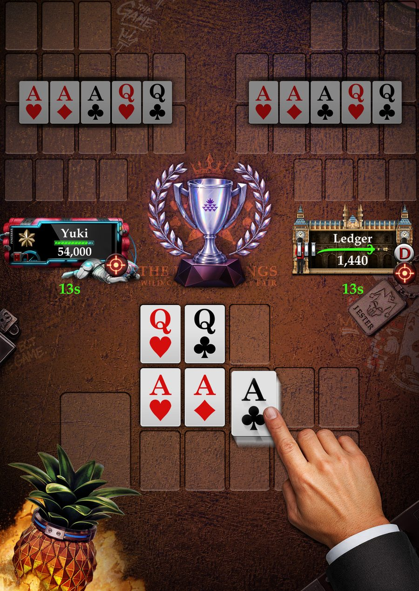
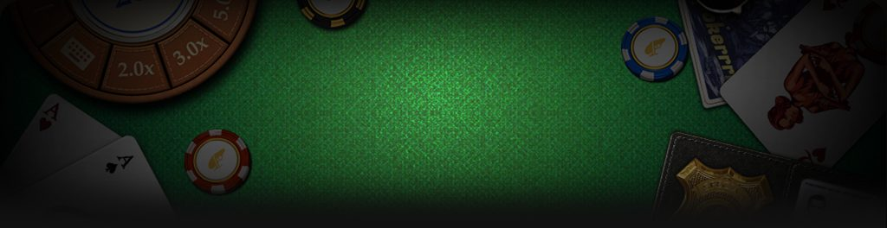
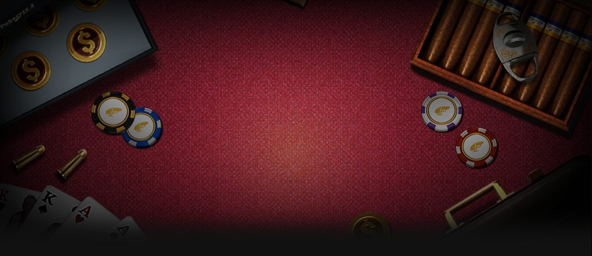
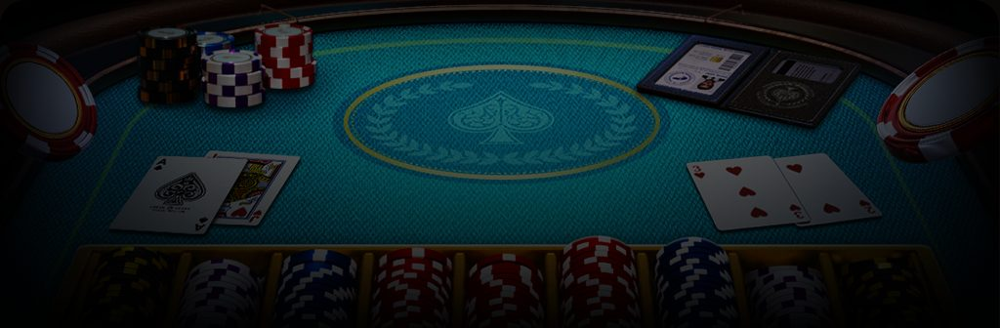
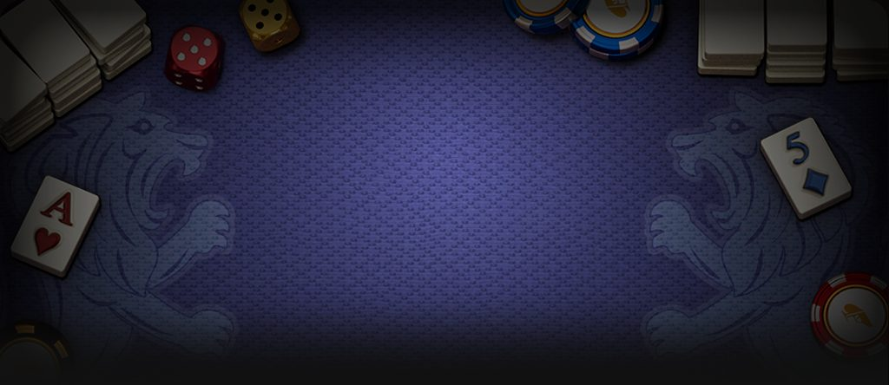
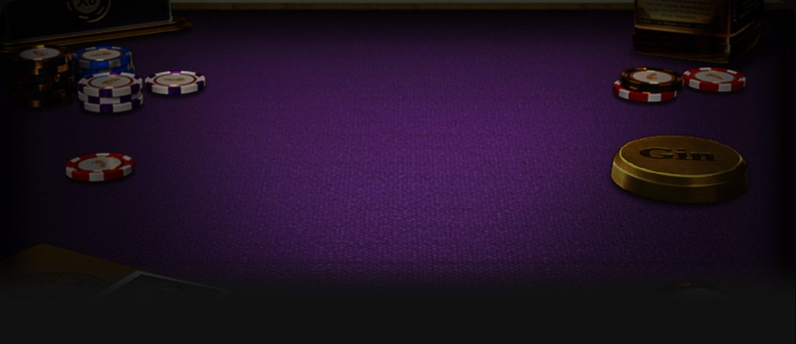

OFC 行動簡報
從第一張牌開始，每一次部署都可能改變最終戰果。準備就緒？HQ 等待你的第一場行動。
OFC 行動規則
每位玩家會拿到 13 張牌，分成前墩（3 張）、中墩（5 張）、後墩（5 張）排出。目標是排出「合格」牌型：後墩牌力必須 ≥ 中墩 ≥ 前墩，順序排錯就會「犯規（Fouled）」，直接輸掉整手牌。
發牌採「先 5 後 3」的節奏——第一輪一次拿 5 張、全部都要放上牌墩；接下來還有 4 輪，每輪拿 3 張、只能用 2 張、棄掉 1 張。牌一放上墩位、完成該輪之後就不能再搬到別的墩，所以每一步都要想清楚。
-
① 接收牌組 // 分批部署
第一輪一次拿 5 張、全部上墩；接下來 4 輪每輪再拿 3 張，只能選 2 張放進牌墩、棄 1 張——牌一放定位就不能再搬到別的墩，每一步都要想清楚。
-
② 排列牌組 // 通過檢核
目標是後墩牌力 ≥ 中墩 ≥ 前墩。只要順序排錯，就會被判定犯規（Fouled），這手牌三墩全部算輸、拿不到任何分數。
-
③ 執行對決 // 結算戰果
三墩都排定後，跟對手逐墩比牌，贏的墩得分；如果三墩都贏對手，還能額外拿到 +3 分的 Scoop 獎勵。
用一組真實的示範手牌，一輪一輪實際練習排牌——可以用點選或拖曳的方式放牌，排完按「確認排列」看看有沒有犯規。
行動成果如何結算？
每一局結束後，三個墩會分別跟對手比牌：贏的墩得 1 分，全部三墩都贏再加碼 +3 分（Scoop）；如果犯規，三墩直接算輸、拿不到分數。中墩、後墩湊出強牌型時還有額外的「獎勵分（Royalty）」，牌型越強、獎勵分越高，如下表所示。
前墩湊到一對 6 以上也有獎勵分，從一對 6 的 +1 分一路加到一對 A 的 +9 分；前墩湊到三條（222～AAA）獎勵分更高，從 +10 分一路加到 +22 分。
| 牌型 | 後墩 | 中墩 |
|---|---|---|
| 三條 | +0 | +2 |
| 順子 | +2 | +4 |
| 同花 | +4 | +8 |
| 葫蘆 | +6 | +12 |
| 鐵支 | +10 | +20 |
| 同花順 | +15 | +30 |
| 皇家同花順 | +25 | +50 |
Fantasyland // 機密行動
只要前墩湊出一對 Q 以上的牌型（且沒有犯規），下一局就能進入 Fantasyland。
第一次進入 Fantasyland 最多可以一次拿到 17 張牌，直接排出三墩，不用像平常一樣一輪一輪決策；在其他玩家排完牌之前，你的牌會蓋著、對手看不到。
如果連續進入 Fantasyland（re-fantasy），下一局只會拿到 14 張牌。想連續留在 Fantasyland，後墩要湊到鐵支以上，或前墩湊到三條。
只要有人在 Fantasyland，莊家位置就會暫時凍結，其他玩家也得等到沒有人在 Fantasyland 才能離桌。

OFC SNG // 同牌，見真章
在 OFC SNG 模式中，一桌固定 3 位玩家，每一輪所有人都會拿到完全相同的一副牌，而且排列方式在攤牌前彼此互相保密。當運氣被排除在外，真正決定勝負的，就只剩下排牌的判斷與技術。
每位玩家一開局都有 300 籌碼，盲注從 10 起跳，每手就往上調一階：10 → 20 → 40 → 60 → 90 → 120 → 200 → 300 → 900。
籌碼歸零就會被淘汰，一場遊戲最多打滿 30 手。
遊戲結束時依名次計算 OSR 積分：前三名玩家分別獲得 +5、-1、-3 分。特殊情況也有對應規則——兩人同時被淘汰各扣 2 分；30 手後還有 2 人存活但沒分出勝負，各加 1 分；3 人都還存活則不加不扣。

更多行動，等你解鎖
App 內還收錄無限注德州撲克、限注奧馬哈、七張梭哈、21點、Rummy、Gin Rummy，以及 OFC 進階模式、OFC 鬼牌、OFC SNG 等多種玩法與「特務任務」系統，下載後即可探索。想先了解某款遊戲的完整規則，點下方卡片即可查看。

翻牌前、翻牌、轉牌、河牌——四輪下注，比出最強的五張牌。
查看行動規則
四張底牌起手，恰好用 2 張底牌＋3 張公用牌組牌，注碼上限是彩池大小。
查看行動規則沒有公用牌，七張牌裡湊出最強的五張，位置隨明牌牌力變化。
查看行動規則
比莊家更接近 21 點又不超過即可獲勝，還有保險、雙倍下注、分牌等進階選擇。
查看行動規則
抽牌、拆牌、湊出合法牌組，率先出完手牌的人獲勝。
查看行動規則
兩人對戰，Deadwood 越低越好，抓對時機 Knock 或 Gin 收下這一局。
查看行動規則